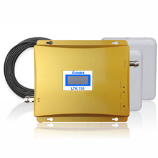
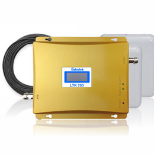
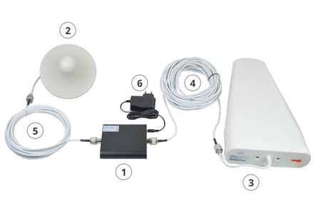
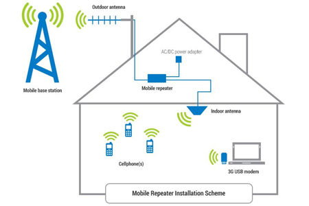

Get instant full 5-bar network coverage inside your home, office, basement, or high-rise building. Compatible with Airtel, Jio, Vodafone Idea (Vi), and BSNL across 2G, 3G, 4G VoLTE & 5G.

Are weak indoor cell reception, dropped calls, and sluggish mobile internet impacting your work or daily life? Mobile Signal Booster Pune delivers enterprise-grade, certified cellular amplifier systems and end-to-end doorstep installation services across Pune, Pimpri-Chinchwad, and surrounding MIDC industrial sectors. Connect directly with our chief RF signal engineers at +91-9893533832 for an instant site audit and live signal testing.
Urban Pune presents complex radio frequency obstacles—from high-density concrete high-rises and Low-E glass facade tech parks to deep double-basement parking lots. Our high-gain dual-band, tri-band, and penta-band mobile network repeaters capture weak carrier frequencies from outdoor towers and deliver full 5-bar signal indoors with zero latency degradation.
Eliminate voice breakup and unlock gigabit mobile data in basements and interior cabins with tailored Jio repeaters.
Guaranteed clear HD voice calling and seamless broadband data transmission across dense commercial zones.
Solidify legacy 2G/3G connectivity alongside modern LTE networks for uninterrupted OTP deliveries and business voice calls.
Whether you require a multi-floor distributed antenna system (DAS) or a compact plug-and-play residential repeater, our field technicians provide same-day doorstep signal audits in every primary sector:
Underground Basements & Parking: Stop walking outside to make calls; our directional donor and omni-directional ceiling antennas push coverage deep subterranean levels.
Corporate Offices & Co-working Spaces: Support up to 100+ concurrent smartphone users simultaneously without dropped video calls or network congestion.
Industrial Warehouses & Steel Fabrication Plants: High-output RF power units engineered to penetrate corrugated metal sheets and dense machinery interference.
Every installation includes certified low-loss coaxial cabling, neat concealed ducting, automatic gain control (AGC) to eliminate cell tower feedback, and live post-installation signal verification before billing.

Tri band supports all networks 2G, 3G, 4G Airtel, Vodafone Idea, Jio, MTNL, and BSNL. Operating across all bands, it delivers blazing-fast 4G speeds along with crystal-clear voice calling.

Designed keeping in mind both HD voice calling and high-speed data usage. Amplifies 2G and 4G networks of Airtel, Vodafone Idea, and Jio for smooth internet and crystal-clear calling.

A reliable Lintratek signal booster engineered for voice calling and standard 3G internet. Ideal for eliminating call drops in residences and shops across Pune.
With over 10 years of experience, we guarantee to provide our consumers with complete high-power mobile signal booster solutions across all telecom providers in Pune.
It does not matter where you are located in Pune. Under our customer-oriented policy, your mobile signal booster kit is delivered free of charge directly to your doorstep.
It takes only 20 minutes to install a cell phone signal booster. Our certified technicians set up outdoor and indoor antennas completely free of charge.
Our dedicated technical team works promptly 24 hours a day to solve any kind of problem across all products installed for our valued customers.
1. High-gain outdoor antenna captures the outdoor signal from the nearest tower.
2. Low-loss coaxial cable connects the outdoor antenna to the amplifier booster inside.
3. Indoor antenna broadcasts full 5-bar network signal throughout your interior rooms.
You can get rid of the problem of a weak mobile signal by installing a signal booster at your office or home, enabling seamless calls with friends, family, and business partners.
Supports all mobile devices and networks (Airtel, Vodafone Idea Vi, Reliance Jio, BSNL) simultaneously with zero lag and enhanced battery efficiency.
Our certified engineers ensure standard mounting, impedance matching, and optimal antenna placement for maximum signal amplification without tower interference.

Every kit includes the high-power amplifier unit, outdoor high-gain LPDA antenna, indoor ceiling/whip antenna, low-loss coaxial cabling, and power adapter.

Mount the outdoor antenna at the upper part of the house facing the nearest cellular tower to capture the strongest and cleanest signal.

Connect the low-loss cable to the amplifier, mount indoor antennas at the middle of your house, power on, and enjoy full 5-bar network reception.
Certified on-site cellular RF survey, same-day delivery, and 20-minute installation across every commercial tech hub, high-rise residential cluster, and MIDC industrial corridor in Pune district.
Heavy-duty enterprise booster repeaters engineered for software campuses, tech centers, and glass-facade towers.
Multi-room indoor amplifiers eliminating indoor dead spots, call drops, and buffering in multi-story apartments.
High-gain directional Yagi repeaters penetrating corrugated metal roofs and heavy machinery RF interference.
Long-range ultra-high gain signal capture systems for fringe cellular zones, valleys, and hilly outskirts.
Don't see your locality? We cover all pin codes across Pune & PCMC district with same-day doorstep service.
Check Your Area / Call NowOvercomes thick subterranean RCC slabs and underground elevator shafts to deliver 5-bar voice & data.
Distributed antenna systems (DAS) providing uniform signal across conference rooms and glass cabins.
Industrial-grade amplifiers overcoming metal cladding, steel trusses, and electrical noise in MIDC units.
Long-distance signal capture pull-in from distant cellular towers up to 15-20 km away.
Cures signal clashing, pilot pollution, and low-E glass attenuation on 10th to 35th floors.
Our telecom repeaters operate across all licensed Department of Telecommunications (DoT) Indian cellular frequency bands for seamless 2G, 3G, 4G LTE VoLTE, and 5G connectivity.
Amplifies a single target frequency (e.g. 900MHz for voice or 1800MHz for LTE). Ideal for budget-conscious small homes or specific carrier fixes.
Simultaneously amplifies 2 frequency bands (e.g., 900MHz + 1800MHz) ensuring flawless voice call quality alongside fast 4G internet data.
The gold standard in network amplification. Simultaneously boosts 900 + 1800 + 2100/2300 MHz, powering all Jio, Airtel, Vi, and BSNL devices with zero configuration.
Find quick answers about mobile signal booster installation, network compatibility, and coverage in Pune.